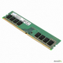

| CPU:인텔 코어i5-9세대 9400F (커피레이크-R) CPU 기능:컴퓨터 시스템을 통제하고 프로그램의 연산을 실행하는 가장 핵심적인 컴퓨터의 제어 장치, 혹은 그 기능을 내장한 칩입니다. |
|
| 그래픽카드:COLORFUL 지포스 GTX1050 TI 그래픽카드 기능:이미지를 디스플레이 장치로 출력하는 컴퓨터 하드웨어의 부품이자 확장 카드입니다. |
|
|  | 메모리:삼성전자 DDR4 16G PC4-21300 메모리 기능:연산 작업, 보조기억장치는 각종 데이터를 보관하는 작업을 수행합니다. |
| 그래픽카드:COLORFUL 지포스 GTX1050 TI 그래픽카드 기능:이미지를 디스플레이 장치로 출력하는 컴퓨터 하드웨어의 부품이자 확장 카드입니다. |
|
| 하드디스크:Seagate 1TB BarraCuda ST1000DM010 하드디스크 기능:비휘발성, 순차접근이 가능한 컴퓨터의 보조 기억 장치입니다. |